ALESSANDRO VINCENZI · UI/UX Design · 2026/2027
Radici.
Un archivio di ricordi
Un progetto digitale nato per raccogliere e valorizzare ricordi familiari attraverso fotografie e storie.

Studente
Alessandro Vincenzi
Corso
ITS Web Design e Strategie Digitali
Modulo
UI/UX Design
Scuola e anno
ITS Accademy I-CREA, CFP Bauer Milano. 2026/2027
dal progetto al case study
Anche questa pagina è un progetto
Per raccontare Radici ho progettato una seconda interfaccia: questo case study. Ho studiato Primer Brand e combinato i suoi componenti per dare una forma coerente al racconto.